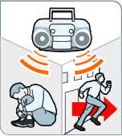
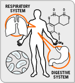
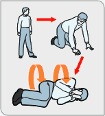
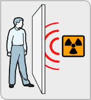

(copied from http://www.uspoliticsforum.com/emergency/ with pop-ups removed)
The US government has a new website, http://www.ready.gov/. It's another attempt at scare mongering in the style of the old "duck and cover" advice after WWII.
The fun thing is that these pictures are so ambiguous they could mean anything! Here are a few interpretations.
If you have set yourself on fire, do not run
If you spot terrorism, blow your anti-terrorism whistle. If you are Vin Diesel, yell really loud.
If you spot a terrorist arrow, pin it against the wall with your shoulder
If you are sprayed with an unknown substance, stand and think about it instead of seeing a doctor.
Use your flashlight to lift the walls right off of you!
The proper way to eliminate smallpox is to wash with soap, water and at least one(1) armless hand.
Michael Jackson is a terrorist. If you spot this smooth criminal with dead, dead eyes, run the fuck away.
Hurricanes, animal corpses and the biohazard symbol have a lot in common. Think about it.
Be on the lookout for terrorists with pinkeye and leprosy. Also, they tend to rub their hands together manically.
If a door is closed, karate chop it open.
If your building collapses, give yourself a blowjob while waiting to be rescued.

Try to absorb as much of the radiation as possible with your groin region. After 5 minutes and 12 seconds, however, you may become sterile
After exposure to radiation it is important to consider that you may have mutated to gigantic dimensions: watch your head.
If you've become a radiation mutant with a deformed hand, remember to close the window. No one wants to see that shit.

-- If you hear the Backstreet Boys, Michael Bolton or Yanni on the radio, cower in the corner or run like hell.

If your lungs and stomach start talking, stand with your arms akimbo until they stop.
If you are trapped under falling debris, conserve oxygen by not farting.

If you lose a contact lens during a chemical attack, do not stop to look for it.
Do not drive a stations wagon if a power pole is protruding from the hood.

A one-inch thick piece of plywood should be sufficient protection against radiation.
Always remember to carry food with you during a terrorist attack. At least you'll be able to enjoy a nice coke and apple before you die.
Page 2
Post your own funnies here.
And check out what others have posted here
Want to discuss this page, and US Politics? Check out the forums. Check out preterhuman.net's old file archive